<!DOCTYPE html>
    <html lang="fr" xmlns="http://www.w3.org/1999/xhtml" xml:lang="fr"></html>
    <head>
        <meta charset="utf-8">
        <link href="style.css" rel="stylesheet" type="text/css" >
        <title>Portfolio Evan GUIHO</title>
        <link rel="preconnect" href="https://fonts.googleapis.com"><link rel="preconnect" href="https://fonts.gstatic.com" crossorigin><link href="https://fonts.googleapis.com/css2?family=Dosis:wght@200..800&display=swap" rel="stylesheet">
        <link rel="preconnect" href="https://fonts.googleapis.com"><link rel="preconnect" href="https://fonts.gstatic.com" crossorigin><link href="https://fonts.googleapis.com/css2?family=Hammersmith+One&display=swap" rel="stylesheet">
    <body>
        <nav id="Navigation">
            <h3>Evan GUIHO</h3>
            <a id="cv-button" href="CV_Evan_GUIHO.pdf" download>Télécharger CV</a>
        </nav>

        <nav id="Raccourcis">
            <ul class="listePerso">
                <li class="debut"><a href="#home" data-text="Revenir en haut"></a></li>
                <li class="Intro"><a href="#Presentation" data-text="Présentation"></a></li>
                <li class="Comp"><a href="#Softskills" data-text="Compétences"></a></li>
                <li class="Parc"><a href="#Experience" data-text="Parcours"></a></li>
                <li class="Proj"><a href="#Projets" data-text="Projets"></a></li>
                <li class="Cont"><a href="#contact" data-text="Contacts"></a></li>
            </ul>
        </nav>

<header id="home">
    
    <h1>Evan GUIHO</h1>
    <h2>Etudiant BUT Informatique</h2>
</header>
<body>
    
    <section id="Presentation">
        <p>Présentation</p>
        <h3>A propos de moi</h3>
        <div>
            <article>
                <div>
                    <figure>
                        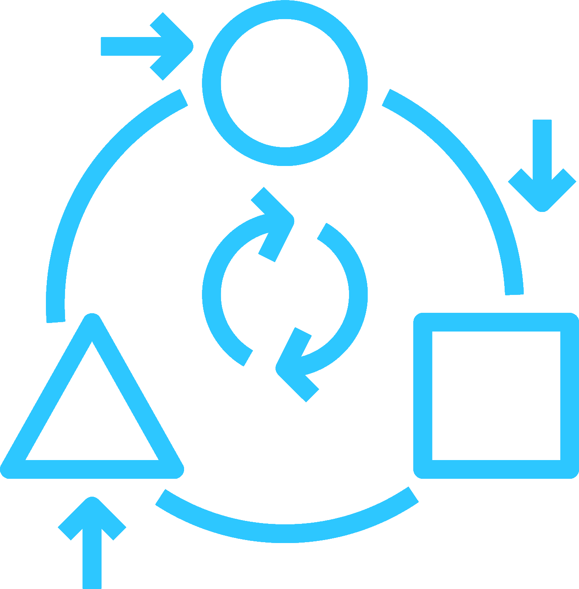
                        <figcaption>Capacité d'adaptation</figcaption>
                    </figure>
                    <figure>
                        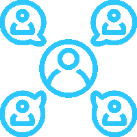
                        <figcaption>Sociable</figcaption>
                    </figure>
                    <figure>
                        
                        <figcaption>Ponctuel</figcaption>
                    </figure>
                </div>
                <div>
                    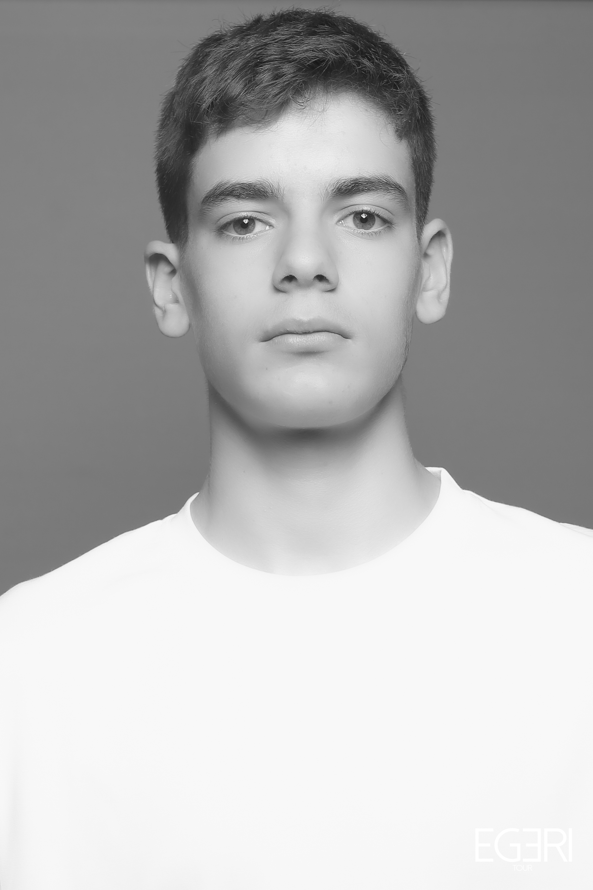
                </div>
            </article>
            <article>
                <p>
                    <strong>Étudiant</strong> en première année de <u>BUT Informatique</u> à l’<u>IUT de Lannion</u>, <strong>passionné</strong> par le <strong>développement logiciel</strong> et les <u>nouvelles technologies</u>. Actuellement en <strong>recherche d’une alternance</strong> de deux ans, avec l’envie de <strong>mettre en pratique</strong> mes connaissances et de <strong>progresser</strong> au sein d’une <u>équipe dynamique</u>.<br>
Des projets comme la <u>création d’un jeu Snake</u> en <u>langage C</u> ou la <u>conception d’une base de données</u> en <u>Tutorial D</u> m’ont permis de <strong>consolider mes compétences</strong> en <u>algorithmique</u>, <u>développement web</u> et <u>programmation orientée objet</u> (<u>Java</u>, <u>Python</u>, <u>HTML/CSS</u>).<br>
Mes <strong>expériences professionnelles</strong> (<u>McDonald's</u>, <u>Leclerc</u>) ont renforcé mon <strong>sens de l’organisation</strong>, ma <u>capacité à travailler en équipe</u>, et m’ont appris à <strong>gérer la pression</strong> avec efficacité.<br>
<u>Sportif</u> depuis toujours, le <u>basket-ball</u>, pratiqué depuis plus de <strong>13 ans</strong>, m’a transmis des <strong>valeurs clés</strong> comme la <u>rigueur</u>, la <u>coopération</u> et la <u>persévérance</u>.<br>
Toujours <strong>curieux</strong> et <strong>motivé</strong>, je suis prêt à <strong>m’investir pleinement</strong> dans des <u>projets concrets</u> et à apporter ma <strong>contribution</strong> à une <u>entreprise innovante</u>.<br>
                </p>
            </article>
        </div>
    </section>
    <section id="Softskills">
        <p>Softskills</p>
        <h3>Mes compétences</h3>
        <div>
            <article class="animate">
                <h3>Développement Web</h3>
                <div>
                    <figure>
                        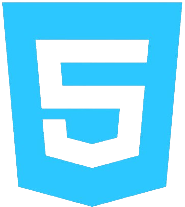
                        <figcaption>HTML</figcaption>
                    </figure>
                    <figure>
                        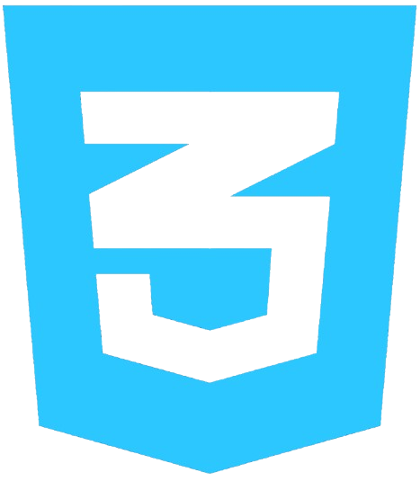
                        <figcaption>CSS</figcaption>
                    </figure>
                    <figure>
                        
                        <figcaption>PHP</figcaption>
                    </figure>
                </div>
            </article>
            <article class="animate" >
                <h3>Développement logiciel</h3>
                <div>
                    <figure>
                        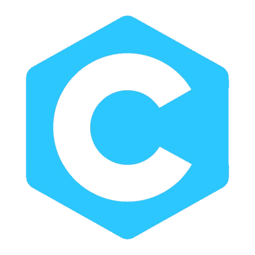
                        <figcaption>C</figcaption>
                    </figure>
                    <figure>
                        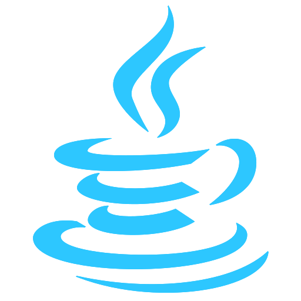
                        <figcaption>Java</figcaption>
                    </figure>
                    <figure>
                        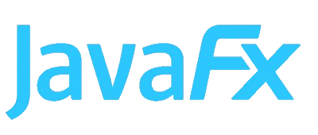
                        <figcaption>JavaFx</figcaption>
                    </figure>
                </div>
            </article>
        </div>
    </section>
    <section id="Experience">
        <p>Mon expérience</p>
        <h3>Mon parcours</h3>
        <div id="container">

            <p>Scolaire : </p>
            <div>
                <article class="box">
                    <h4>Bac STI2D option SIN</h4>
                    <p>Lycée La Joliverie, Nantes, Pays de la Loire</p>
                </article>
                <article class="box">
                    <h4>Bac +1 BUT Informatique</h4>
                    <p>IUT lannion Côte d’armor</p>
                </article>
                
            </div>

            <p>Autre :</p>

            <div>
                <article class="box">
                    <h4>Employé polyvalant</h4>
                    <p>Mc Donald’s, Clisson, Pays de la loire</p>
                </article>
                <article class="box">
                    <h4>Stage en service informatique</h4>
                    <p>Tronico, Saint-philbert-de-Bouaine, Vendée </p>
                </article>
                <article class="box">
                    <h4>Mise en rayon</h4>
                    <p>Leclerc , Vallet, Pays de la loire</p>
                </article>
                <article class="box">
                    <h4>Concourt de mannequinat</h4>
                    <p>Egerie-Tour, Nantes, Pays de la loire</p>
                </article>
            </div>
        </div>
    </section>
    <section id="Projets">
    <p>Mes projets</p>
    <h3>Mes Projets Scolaires</h3>
    <div id="projectsContainer" style="display: flex; flex-wrap: wrap; justify-content: center; gap: 4vw;">
        
        <article class="project"
        data-title="Organisation d’un travail d’équipe"
        data-description="Projet réalisée en groupe ayant pour objectif de structurer le travail d’équipe en réponse à une problématique réelle, avec des outils de collaboration et une répartition des rôles."
        data-example="Dans une équipe de 4 personnes, nous avons mené un projet de team building présenté au CSE d’une petite entreprise. Cette expérience m’a permis d’appréhender l’écosystème numérique, d’identifier les rôles au sein d’une équipe pluridisciplinaire et de développer mes compétences en communication, gestion de projet et outils collaboratifs "
        
        data-img="images/sae206.png"
        style="cursor: pointer; background-color: #242F42; border-radius: 10px; padding: 1em; width: 40vw; max-width: 400px; box-shadow: 0 4px 10px rgba(0,0,0,0.3);">
           <figure>
               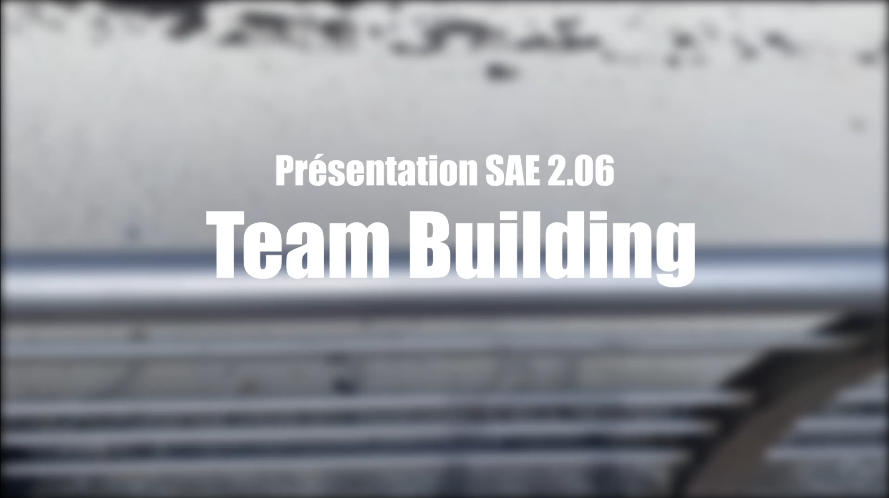
               <figcaption style="color: #FFF3F0; font-family: 'Hammersmith One', sans-serif; font-size: 1.2rem; text-align: center; margin-top: 0.5em;">Organisation d’un travail d’équipe</figcaption>
           </figure>
       </article>

       <article class="project"
        data-title="KNN & K-Means en Python"
        data-description="Projet de machine learning consistant à implémenter les algorithmes KNN et K-Means pour classer et regrouper des données en Python avec Scikit-learn."
        data-example="Ce projet m’a permis de comprendre la logique de classification supervisée (KNN) et de regroupement non-supervisé (K-Means), tout en pratiquant la visualisation de données et l’évaluation de modèles."
        data-img="images/kmeans.png"
        style="cursor: pointer; background-color: #242F42; border-radius: 10px; padding: 1em; width: 40vw; max-width: 400px; box-shadow: 0 4px 10px rgba(0,0,0,0.3);">
           <figure>
               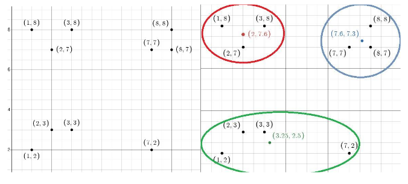
               <figcaption style="color: #FFF3F0; font-family: 'Hammersmith One', sans-serif; font-size: 1.2rem; text-align: center; margin-top: 0.5em;">KNN & K-Means en Python</figcaption>
           </figure>
       </article>

       <!-- Projet Base de Données -->
       <article class="project"
                data-title="Projet Base de Données"
                data-description="Projet réalisé en cours de base de données où nous avons conçu et peuplé une base, mettant en pratique la modélisation et les requêtes SQL."
                data-example="Ce projet m'a permis de maîtriser la modélisation relationnelle, la rédaction de requêtes complexes et la gestion intégrée des données."
                data-img="images/bdd1.png"
                style="cursor: pointer; background-color: #242F42; border-radius: 10px; padding: 1em; width: 40vw; max-width: 400px; box-shadow: 0 4px 10px rgba(0,0,0,0.3);">
           <figure>
               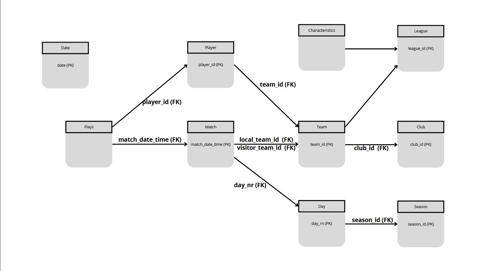
               <figcaption style="color: #FFF3F0; font-family: 'Hammersmith One', sans-serif; font-size: 1.2rem; text-align: center; margin-top: 0.5em;">Projet Base de Données</figcaption>
           </figure>
       </article>

       <!-- Projet Installation Poste Dev -->
       <article class="project"
                data-title="Installation d’un Poste de Développement"
                data-description="Projet sur l’installation et la configuration d’un environnement complet de développement incluant gestion de version, documentation, outils et librairies."
                data-example="Ce projet m'a appris à configurer un environnement de travail professionnel, facilitant la collaboration et la reproductibilité des configurations."
                data-img="images/sae203.png"
                style="cursor: pointer; background-color: #242F42; border-radius: 10px; padding: 1em; width: 40vw; max-width: 400px; box-shadow: 0 4px 10px rgba(0,0,0,0.3);">
           <figure>
               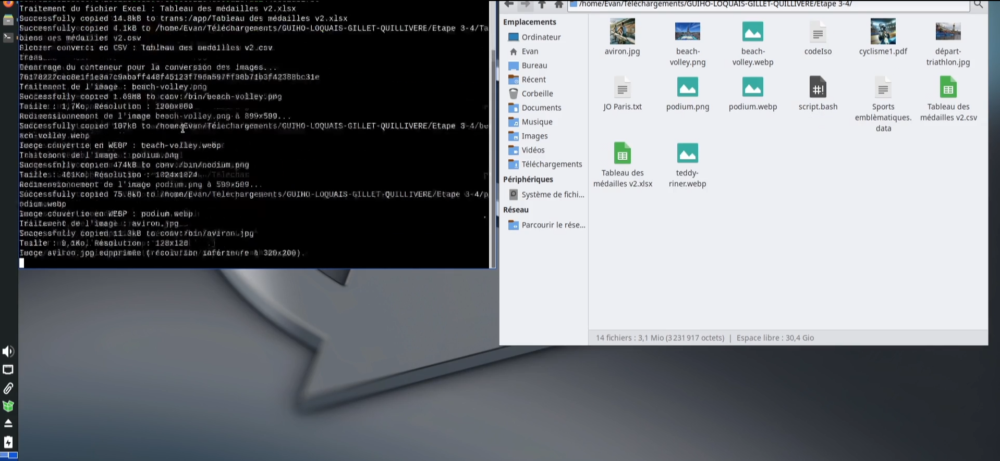
               <figcaption style="color: #FFF3F0; font-family: 'Hammersmith One', sans-serif; font-size: 1.2rem; text-align: center; margin-top: 0.5em;">Installation d’un Poste de Développement</figcaption>
           </figure>
       </article>

       <!-- Projet Site JO -->
       <article class="project"
                data-title="Site Epreuve JO"
                data-description="Site web créé pour l’épreuve des Jeux Olympiques, mettant en œuvre HTML, CSS et une organisation claire des contenus."
                data-example="Ce projet m'a aidé à mieux comprendre la structuration de site web et l’importance du responsive design."
                data-img="images/site_jo.png"
                style="cursor: pointer; background-color: #242F42; border-radius: 10px; padding: 1em; width: 40vw; max-width: 400px; box-shadow: 0 4px 10px rgba(0,0,0,0.3);">
           <figure>
               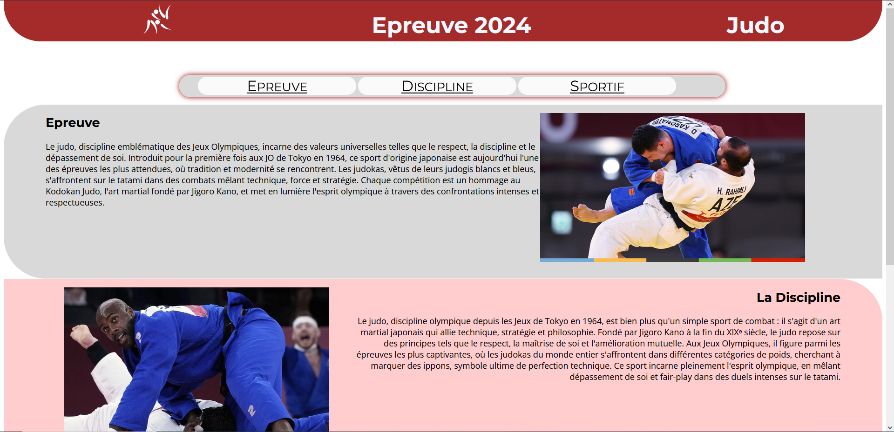
               <figcaption style="color: #FFF3F0; font-family: 'Hammersmith One', sans-serif; font-size: 1.2rem; text-align: center; margin-top: 0.5em;">Site Epreuve JO</figcaption>
           </figure>
       </article>

       <!-- Projet Jeu Snake -->
       <article class="project"
                data-title="Jeu Snake"
                data-description="Jeu Snake programmé en langage C, avec plusieurs modes dont un autonome, pour renforcer mes compétences en algorithmique et programmation système."
                data-example="Ce projet m'a permis de consolider mes connaissances en programmation bas niveau et en gestion de logique de jeu."
                data-img="images/Snake.gif"
                style="cursor: pointer; background-color: #242F42; border-radius: 10px; padding: 1em; width: 40vw; max-width: 400px; box-shadow: 0 4px 10px rgba(0,0,0,0.3);">
           <figure>
               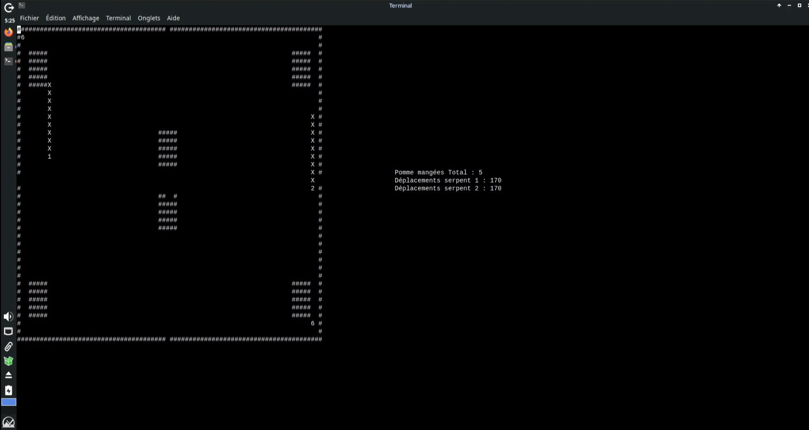
               <figcaption style="color: #FFF3F0; font-family: 'Hammersmith One', sans-serif; font-size: 1.2rem; text-align: center; margin-top: 0.5em;">Jeu Snake</figcaption>
           </figure>
       </article>
   </div>

    <!-- Modal pop-up -->
    <div id="modalOverlay" role="dialog" aria-modal="true" aria-labelledby="modalTitle" aria-describedby="modalDescription" 
         style="display:none; position: fixed; top: 0; left: 0; width: 100vw; height: 100vh; background: rgba(0,0,0,0.75); justify-content: center; align-items: center; z-index: 2000;">
        <div id="modalContent" 
             style="background-color: #242F42; padding: 2em; border-radius: 20px; max-width: 90vw; max-height: 90vh; overflow-y: auto; box-shadow: 0 0 15px #3b5eff; position: relative; color: #FFF3F0; font-family: 'Dosis', sans-serif;">
            <button id="modalClose" aria-label="Fermer" 
                    style="position: absolute; top: 10px; right: 15px; font-size: 2rem; background: none; border: none; color: #3b5eff; cursor: pointer;">&times;</button>
            
            <h4 id="modalTitle" style="font-family: 'Hammersmith One', sans-serif; color: #3b5eff;"></h4>
            <p id="modalDescription" style="margin-top: 0.5em; font-size: 1.1rem; line-height: 1.4;"></p>
            <blockquote id="modalExample" 
                        style="font-style: italic; margin-top: 1.5em; border-left: 4px solid #3b5eff; padding-left: 1em; color: #7280FF; font-size: 1rem;">
            </blockquote>
        </div>
    </div>
</section>


    <section id="contact">
    <p>Mes contacts</p>
    <h3>Contactez-Moi</h3>
    <div>
        <article style="display: flex; gap: 3vw; flex-wrap: wrap; justify-content: center;">
            <figure style="text-align: center; cursor: pointer;">
                <a href="mailto:evan.giho@example.com" target="_blank" rel="noopener noreferrer" style="text-decoration: none; color: inherit;">
                    
                    <figcaption>Email</figcaption>
                    <p>Cliquez ici pour un mail →</p>
                </a>
            </figure>
            <figure style="text-align: center; cursor: pointer;">
                <a href="https://wa.me/0786257171" target="_blank" rel="noopener noreferrer" style="text-decoration: none; color: inherit;">
                    
                    <figcaption>WhatsApp</figcaption>
                    <p>Ou ici pour un SMS →</p>
                </a>
            </figure>
            <figure style="text-align: center; cursor: pointer;">
                <a href="https://www.linkedin.com/in/evan-guiho-b8082b301/" target="_blank" rel="noopener noreferrer" style="text-decoration: none; color: inherit;">
                    
                    <figcaption>LinkedIn</figcaption>
                    <p>Et n'oublie pas mon LinkedIn</p>
                </a>
            </figure>
        </article>
    </div>
</section>

<h3>Par Evan.</h3>
<p>EvanGuiho.com Tous droits réservés</p>

      


<script>
document.addEventListener('DOMContentLoaded', () => {
  const projects = document.querySelectorAll('.project');
  const modalOverlay = document.getElementById('modalOverlay');
  const modalClose = document.getElementById('modalClose');
  const modalTitle = document.getElementById('modalTitle');
  const modalDescription = document.getElementById('modalDescription');
  const modalExample = document.getElementById('modalExample');
  const modalImage = document.getElementById('modalImage'); // Image par défaut dans le modal

  // Fonction pour retirer la vidéo si elle existe
  function stopAndRemoveVideo() {
    const oldVideo = modalOverlay.querySelector('video');
    if (oldVideo) {
      oldVideo.pause();
      oldVideo.currentTime = 0;
      oldVideo.remove();
    }
  }

  // Boucle sur tous les projets
  projects.forEach(project => {
    project.addEventListener('click', () => {
      const title = project.getAttribute('data-title');
      const description = project.getAttribute('data-description');
      const example = project.getAttribute('data-example');
      const imgSrc = project.getAttribute('data-img');
      const videoSrc = project.getAttribute('data-video');

      modalTitle.textContent = title;
      modalDescription.textContent = description;
      modalExample.textContent = example;

      // Nettoyage modal : retirer ancienne vidéo
      stopAndRemoveVideo();

      if (videoSrc && videoSrc.endsWith('.mp4')) {
        // Affiche la vidéo
        modalImage.style.display = 'none';
        const video = document.createElement('video');
        video.src = videoSrc;
        video.controls = true;
        video.autoplay = true;
        video.style.width = '80%';
        video.style.borderRadius = '10px';
        video.style.display = 'block';
        video.style.margin = '1em auto';
        modalImage.parentNode.insertBefore(video, modalImage);
      } else {
        // Affiche une image ou GIF
        modalImage.style.display = 'block';
        modalImage.src = imgSrc || videoSrc; // fallback : certains gifs sont mis dans data-video
        modalImage.alt = `Image du projet ${title}`;
        modalImage.style.width = '100%';
        modalImage.style.borderRadius = '10px';
        modalImage.style.display = 'block';
        modalImage.style.margin = '1em auto';
      }

      modalOverlay.style.display = 'flex';

    });
  });

  // Fermeture modal (croix)
  modalClose.addEventListener('click', () => {
    modalOverlay.style.display = 'none';
    stopAndRemoveVideo();
  });

  // Fermeture modal (clic hors contenu)
  modalOverlay.addEventListener('click', e => {
    if (e.target === modalOverlay) {
      modalOverlay.style.display = 'none';
      stopAndRemoveVideo();
    }
  });
});
</script>


</body>
